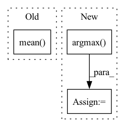

Pattern ID :33789

Before Change
return out
out, _ = out
out = lax.psum(out, ParallelAxes.model)
return jnp.square(jax.nn.softmax(out) - one_hot(tgt, ctx.dims.features)).mean(), out.mean()
After Change
return out
out, _ = out
out = lax.psum(out, ParallelAxes.model)
acc = (out.argmax(-1) == tgt).astype(jnp.float32).mean()
return jnp.square(jax.nn.softmax(out) - one_hot(tgt, ctx.dims.features)).mean(), acc
In pattern: SUPERPATTERN
Frequency: 5
Non-data size: 3
Instances
Fragment ID: 97016155
Project Name: homebrewnlp/homebrewnlp-jax
Commit Name: a32967765037d3abaa67c28d7b47895c3af4db61
Time: 2022-08-07
Author: 39779310+ClashLuke@users.noreply.github.com
File Name: src/model.py
M Class Name: AnonimousClass
N Class Name: AnonimousClass
M Method Name: compute(2)
N Method Name: compute(2)
M Parent Class:
N Parent Class:
M File Name: src/model.py
N File Name: src/model.py
M Start Line: 423
M End Line: 424
N Start Line: 423
N End Line: 425
'>
Before Change
out.train_out[epoch] = np.array([accuracy.mean(), micro, macro])
print("{:3d} loss:{:0.4f} accuracy:{:0.4f} micro:{:0.4f} macro:{:0.4f}"
.format(epoch, loss.tolist(), accuracy.mean(), micro, macro))
return z, loss
After Change
z = model.aa(z, data.aa_edge_idx, edge_weight=data.aa_edge_weight)
score = model.mcip(z, data.train_node_idx)
pred = torch.argmax(score, dim=1)
loss = -torch.log(score[range(score.shape[0]), data.train_node_class] + EPS).mean()
loss.backward()
optimizer.step()
'>
Fragment ID: 97016158
Project Name: nyxflower/gripnet
Commit Name: 6a1abf4efb8aad81109d87bf4029c5b1bb830875
Time: 2020-04-17
Author: nyx0flower@gmail.com
File Name: grip-auta.py
M Class Name: AnonimousClass
N Class Name: AnonimousClass
M Method Name: train(1)
N Method Name: train(1)
M Parent Class:
N Parent Class:
M File Name: grip-auta.py
N File Name: grip-auta.py
M Start Line: 87
M End Line: 106
N Start Line: 89
N End Line: 92
'>
Before Change
per_class_accuracy /= label_mask.float().sum()
accuracies.append(per_class_accuracy.cpu().item())
// overall accuracy
accuracies.append(accuracy_mask.float().mean().cpu().item())
//accuracies = np.array(accuracies)
return accuracies
After Change
num_classes = scores.shape[-1]
predictions = tf.argmax(scores, axis=-1)
accuracies = []
labels = tf.cast(labels, tf.int64)
accuracy_mask = predictions == labels
for label in range(num_classes):
label_mask = labels == label
num_label = label_mask.numpy().sum()
if num_label == 0 :
num_label = 1
per_class_accuracy = (accuracy_mask & label_mask).numpy().sum()
per_class_accuracy /= num_label
accuracies.append(per_class_accuracy)
// overall accuracy
accuracies.append(accuracy_mask.numpy().mean())
'>
Fragment ID: 97016146
Project Name: isl-org/open3d-ml
Commit Name: 03ca155fac60769cece3442f281db599cec14139
Time: 2020-08-20
Author: yilingq@umd.edu
File Name: ml3d/tf/modules/metrics/semseg_metric.py
M Class Name: SemSegMetric
N Class Name: SemSegMetric
M Method Name: acc(3)
N Method Name: acc(3)
M Parent Class: object
N Parent Class: object
M File Name: ml3d/tf/modules/metrics/semseg_metric.py
N File Name: ml3d/tf/modules/metrics/semseg_metric.py
M Start Line: 31
M End Line: 43
N Start Line: 30
N End Line: 51